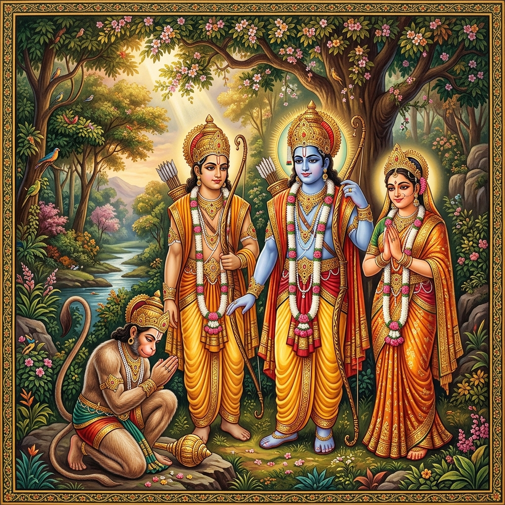
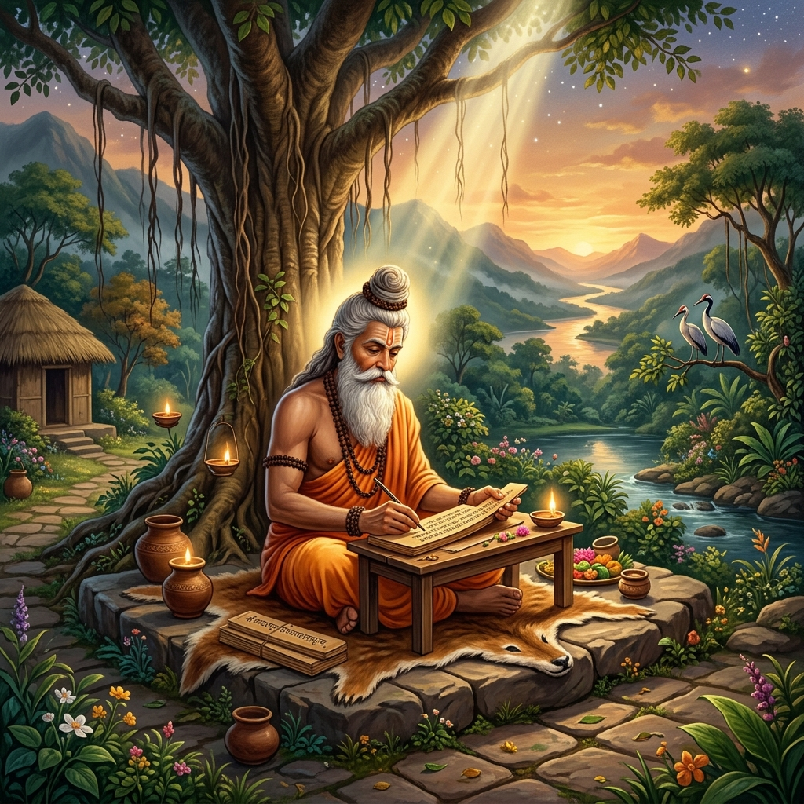
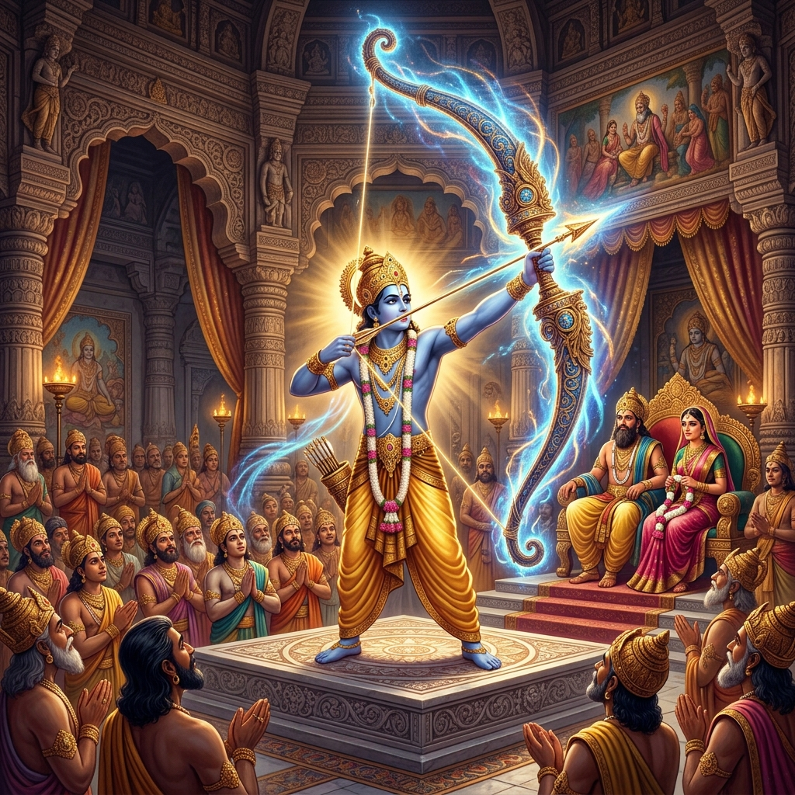
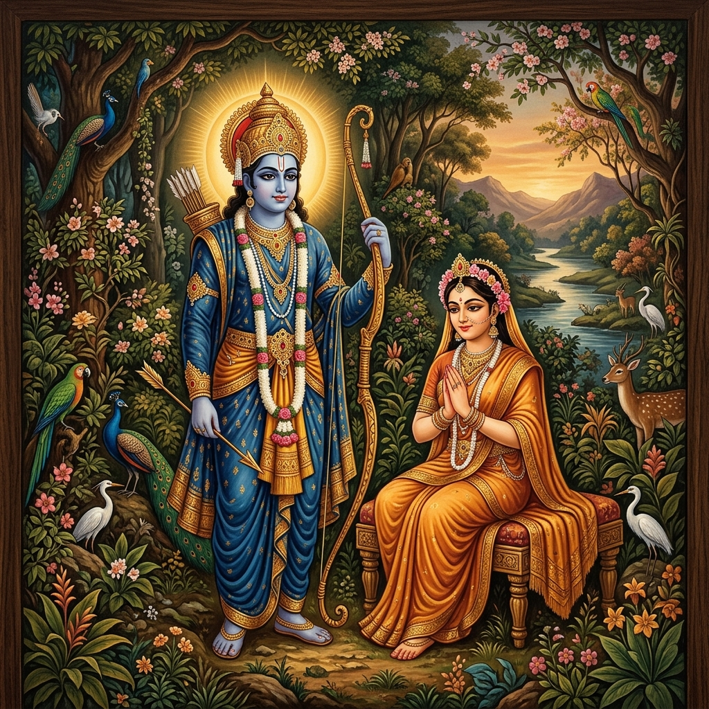
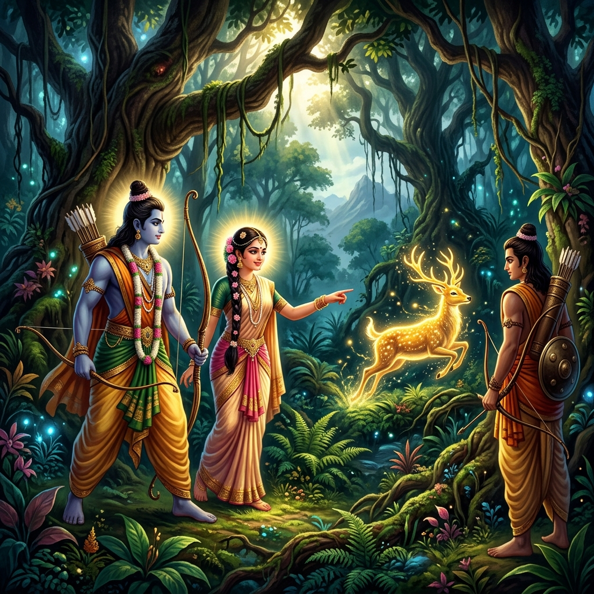
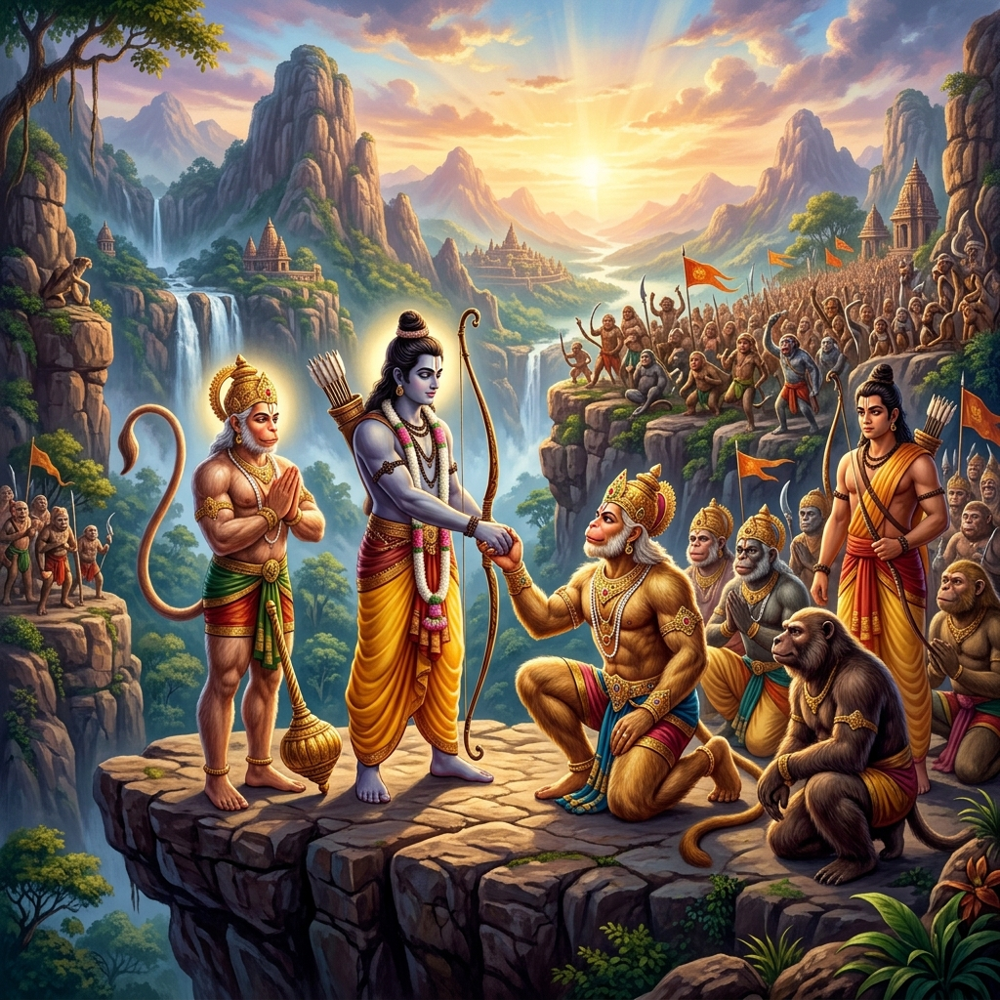
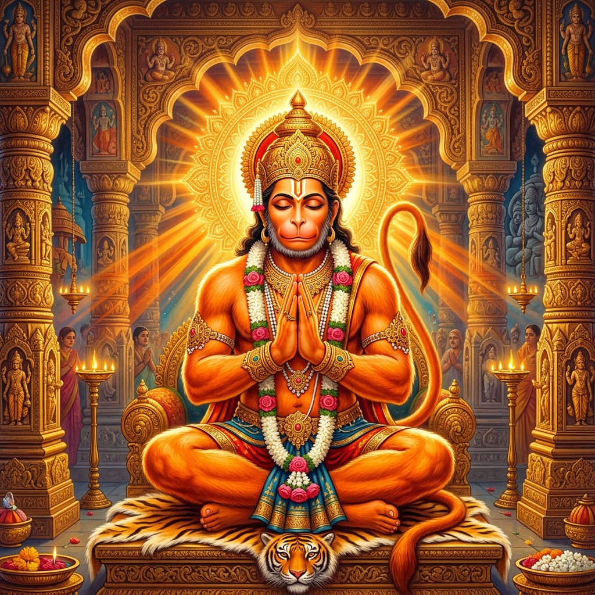
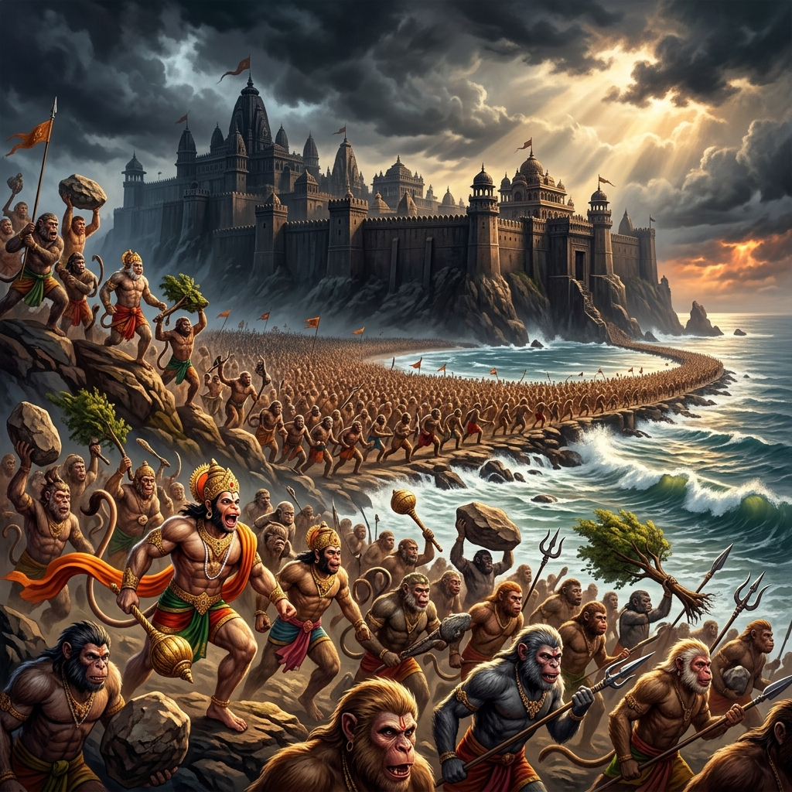
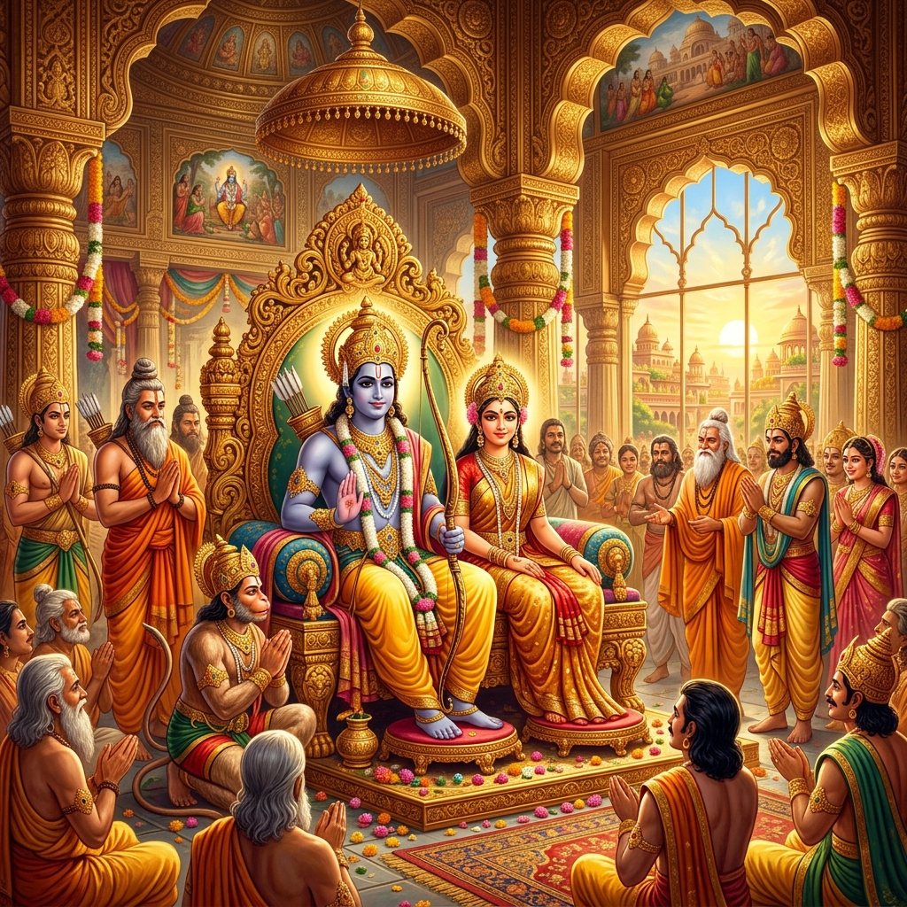

The Adi Kavya — Valmiki's First Poem

The Ramayana, known as the Adi Kavya or 'First Poem,' was composed by the sage Valmiki around 500 BCE. It contains 24,000 verses in seven books called Kandas, narrating the journey of Prince Rama of Ayodhya. The word 'Ramayana' means 'the Journey of Rama' and it is not merely a story but a living ethical and spiritual guide that has shaped the lives of billions across Asia for over two millennia.
The story of its creation is itself extraordinary. Valmiki, walking by the river Tamasa, witnessed a hunter shoot one of two mating Krauncha birds. Overcome with grief for the surviving bird, he spontaneously uttered a curse in a new rhythmic meter — the Anushtubh. The god Brahma appeared and instructed him to compose the story of Rama in this meter, saying that Rama's life embodies all the dharmic and spiritual wisdom that humanity needs. Valmiki's first pupils were Lava and Kusha — Rama's own sons — who sang the Ramayana before their unknowing father.
Bala Kanda — The Childhood of Rama

The Bala Kanda narrates Rama's divine birth as the seventh Avatar of Vishnu to King Dasharatha of Ayodhya and his queen Kaushalya. Dasharatha performed the Putrakameshti Yajna (a sacred fire ritual for a son), and the gods answered with four divine sons — Rama, Bharata, Lakshmana, and Shatrughna. From childhood, Rama displayed extraordinary qualities of compassion, courage, and dharmic clarity that set him apart as a destined king.
As a young prince, Rama trained under the sage Vishwamitra, who took him to protect his ashram from demons. Rama slew the demoness Tataka, destroyed the demon Maricha's pride, and liberated the sage Ahalya from her curse — all before reaching Mithila. At the swayamvara (self-choice ceremony) of King Janaka's daughter Sita, Rama effortlessly lifted and strung the colossal bow of Lord Shiva — a feat no other prince could accomplish — winning Sita's hand and beginning the most celebrated love story in Indian literature.
Rama — The Maryada Purushottam (Ayodhya Kanda)

The Ayodhya Kanda opens with the joyful preparations for Rama's coronation as Crown Prince — only to have everything shattered by the schemes of Kaikeyi, Dasharatha's youngest wife, manipulated by her maid Manthara. Invoking two boons the king had once promised her, Kaikeyi demands that her son Bharata be crowned king and that Rama be exiled to the forest for fourteen years. King Dasharatha, bound by his royal word, collapses in grief — and dies of heartbreak shortly after Rama's departure.
Rama, devoted to dharma above all else, accepts the exile without complaint or bitterness. He changes his royal robes for bark and leaves, and prepares to depart. Both Sita — insisting that a wife's place is with her husband — and Lakshmana — unable to live without his elder brother — accompany him to the forest. Bharata, who had been away and returns to find his mother's scheme accomplished and his father dead, refuses the throne and places Rama's sandals upon it, governing as regent until Rama's return — a supreme act of brotherly devotion.
Aranya Kanda — The Forest and Sita's Abduction

In the Aranya Kanda, Rama, Sita and Lakshmana dwell in the Dandaka forest, living as ascetics and protecting sages from demonic attacks. The forest is the space of purification — where Rama's dharma is tested by hardship, encounters with sages and demons, and the steady deepening of his wisdom. He defeats many demons, visits the ashrams of great sages, and receives teachings that prepare him for the trials to come.
The critical event of this Kanda is Sita's abduction. Surpanakha, the demon sister of Ravana, attempts to seduce Rama and Lakshmana and is repulsed and mutilated. She complains to Ravana, who decides to take revenge by abducting Sita. The demon Maricha takes the form of a golden deer that entrances Sita; she asks Rama to capture it. Rama pursues the deer, and when Lakshmana follows to help him, Ravana — king of Lanka — crosses the protective line (Lakshmana Rekha) and abducts Sita in his flying chariot Pushpaka, carrying her across the sea to Lanka against her will.
Kishkindha Kanda — The Great Alliance

Devastated by Sita's loss, Rama and Lakshmana search the forest desperately. They meet Hanuman — the son of the wind god Vayu — who serves the exiled monkey king Sugriva on the Rishyamuka mountain. Hanuman, recognizing Rama's divine nature, brings him to Sugriva. Rama and Sugriva form a sacred alliance: Rama will slay Vali (the usurper who had stolen Sugriva's throne and wife) and in return Sugriva's monkey army will search for Sita.
Rama slays Vali from behind a tree in a disputed act that the epic itself questions, exploring the tension between personal loyalty and cosmic justice. With Sugriva restored to his throne, the massive army of Vanaras (monkeys) and bears is organized for the greatest search operation in mythological history. Search parties are sent in all four directions; it is Hanuman's party heading south who receives from the dying eagle Jatayu the information that Ravana has carried Sita southward. Hanuman is chosen to leap across the ocean to Lanka.
Hanuman — The Supreme Devotee (Sundara Kanda)

The Sundara Kanda — the 'Beautiful Book' — is the most beloved section of the Ramayana and centres entirely on Hanuman's mission to Lanka. When his companions doubt his ability to leap the hundred-league ocean, Hanuman himself momentarily forgets his power. The elder Jambavan reminds him of his divine birth and limitless strength — a metaphor for the soul rediscovering its divine nature through a teacher's guidance. Empowered by this reminder, Hanuman assumes a giant form and in one magnificent leap crosses the ocean, overcomes the sea-demoness Simhika, and lands on the shores of Lanka.
In Lanka, Hanuman searches through palaces and gardens in his small monkey form, carefully avoiding capture. He finds Sita imprisoned in the Ashoka grove under the guard of demon women, steadfastly refusing Ravana's proposals and sustained only by her devotion to Rama. Hanuman reveals himself, gives her Rama's signet ring as proof, and delivers Rama's message of hope and imminent rescue. Before leaving, Hanuman allows himself to be captured, brought before Ravana's court, and punished by having his tail set on fire — whereupon he uses his burning tail to set Lanka ablaze, then returns triumphantly across the ocean with the news that Sita is alive.
Yuddha Kanda — The Great War in Lanka

The Yuddha Kanda narrates the climactic war. Nala and Nila, gifted monkey builders, construct a miraculous bridge (Rama Setu) of floating stones across the ocean to Lanka — each stone inscribed with Rama's name. Crossing this bridge, the vast army of Vanaras and bears reaches Lanka and besieges the city. The battle that follows is one of the most dramatic in world literature — armies clash, divine weapons are unleashed, great heroes fall on both sides. Ravana's noble brother Vibhishana, horrified by the injustice of Sita's abduction, defects to Rama's side and becomes a key advisor.
In the final confrontation, Rama and Ravana engage in a titanic single combat. Ravana's heads are cut off but regenerate until the sage Agastya teaches Rama the Aditya Hridayam — a hymn to the Sun god — and gives him the divine Brahmastra. With this supreme weapon, Rama finally slays Ravana. Sita passes the Agni Pariksha (trial by fire) to prove her purity; the fire god Agni returns her unharmed, and the gods celebrate from the heavens. Rama's father Dasharatha descends from heaven to bless his son. The Pushpaka Vimana carries Rama, Sita, and all their allies back to Ayodhya, where the people light oil lamps to welcome their king — the origin of the festival of Diwali.
Uttara Kanda — Rama's Reign and Legacy

The Uttara Kanda narrates Rama's coronation and his establishment of Rama Rajya — a golden age of perfect justice, prosperity, and dharma in which no subject suffers, every person fulfils their purpose, and the king rules as the servant of his people. This ideal of Ramarajya became the supreme standard of good governance in Indian civilization — a vision of the state not as an instrument of power but as a mechanism of collective dharmic flourishing. Mahatma Gandhi made Ramarajya the central vision of his independence movement.
In the later and more controversial chapters, a washerman publicly questions Sita's purity after her time in Lanka. Rama, torn between his love for Sita and his duty as a king to uphold public opinion, sends the pregnant Sita to the forest — where she is sheltered by Valmiki and gives birth to twin sons Lava and Kusha. Years later, Lava and Kusha sing the Ramayana before their unknowing father at a great sacrifice; Rama recognizes them as his sons but Sita, summoned to prove her purity again before the public, calls upon the Earth — her divine mother — to receive her back, and the earth opens and takes her. Rama, heartbroken, eventually ascends to his divine abode in the Sarayu river, concluding a story that is simultaneously a cosmic myth, a personal tragedy, and an eternally living guide to dharmic human existence.